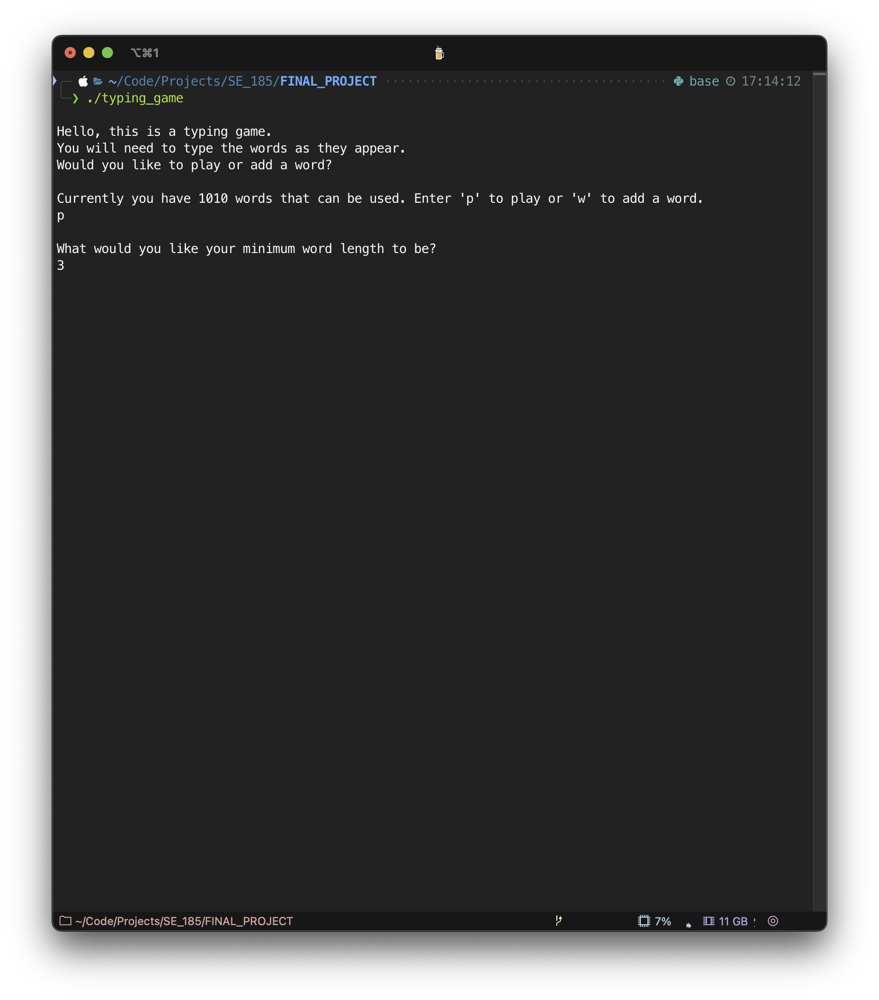
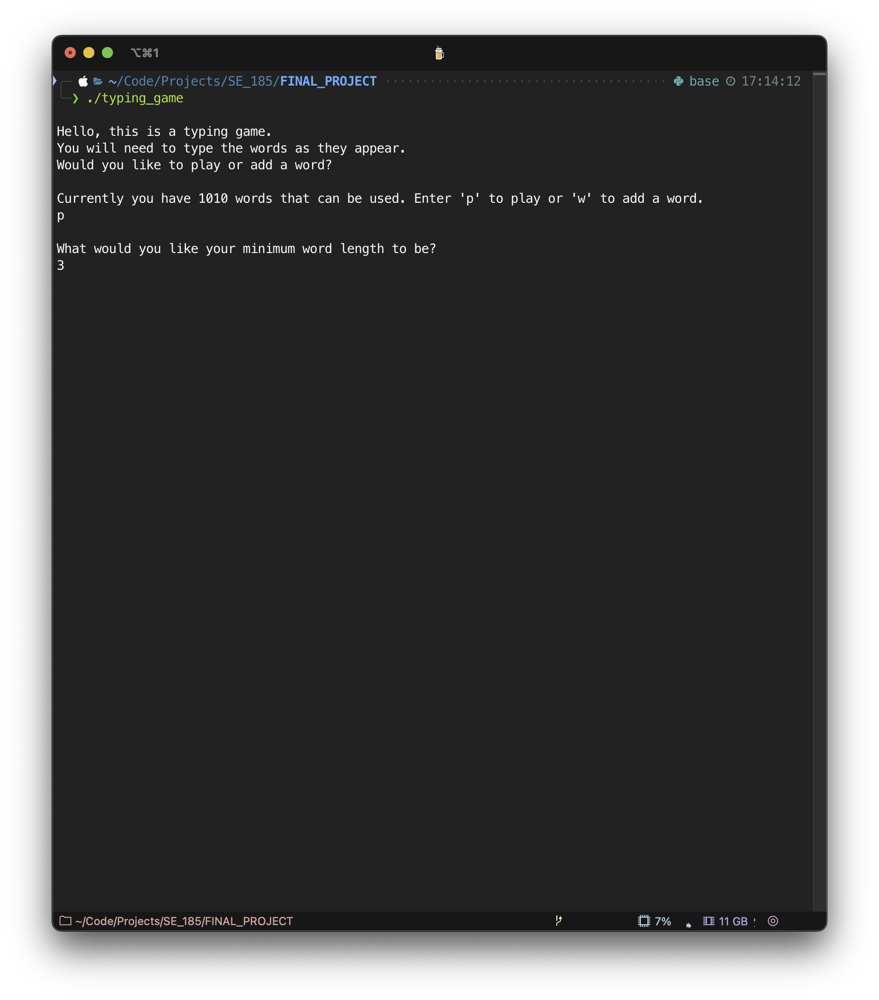

Projects
Project 1: Spotify Dash
The Spotify Dashboard is a web app built with HTML, CSS, and JavaScript that integrates with the Spotify Web API to display user data. It allows users to log in via Spotify authentication and view their profile information, top artists, favorite tracks, and recently played songs. The app dynamically updates the UI based on API responses, providing an interactive way to explore listening history.
 

Project 2: Terminal Typing Game
A falling word game for the terminal in C involves displaying words that "fall" down the screen, requiring the player to type them before they reach the bottom. The game uses multithreading (pthread) or non-blocking input (ncurses) to handle real-time word movement while capturing user input. The project also involved using dynamic memory allocation to handle word storage and basic game mechanics like scoring and detecting game-over conditions.